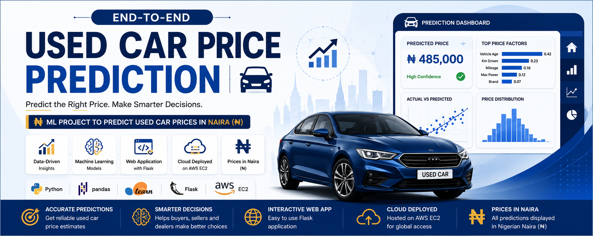
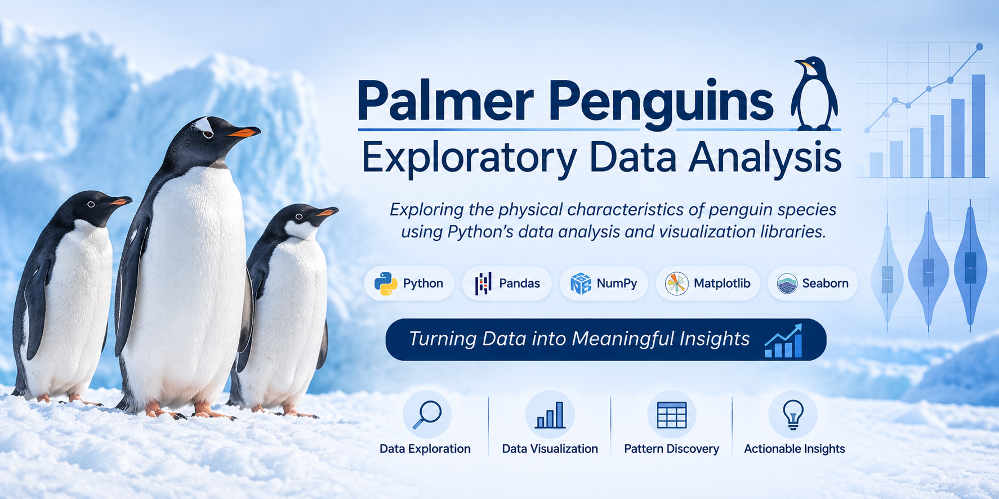

About Me
Data Scientist & Data Analyst
I'm a Data Scientist and Data Analyst with
8+ years of professional experience spanning
telecommunications, Avaya Technical Support Engineer,
online quality assurance, customer operations, and
Odoo ERP business solutions.
I specialize in building data-driven solutions using
Python, SQL, Power BI, Machine Learning, AWS, and Odoo ERP.
My work includes exploratory data analysis, predictive modeling,
interactive dashboards, business intelligence reporting,
and deploying machine learning applications that support informed business decisions.
I enjoy transforming complex data into actionable insights that improve
business performance, optimize business processes, and enable
data-driven decision-making.

End-to-end Machine Learning project that predicts used car prices using
Python and Scikit-learn. The solution includes data preprocessing,
feature engineering, model training, hyperparameter tuning, and
deployment with Streamlit on AWS.
Technologies:
Python • Pandas • NumPy • Scikit-learn • Streamlit • AWS • Joblib
Model: Random Forest Regressor
Performance: R² Score = 0.89
Exploratory Data Analysis

A comprehensive Exploratory Data Analysis (EDA) project using the Palmer Penguins dataset.
This project demonstrates data cleaning, statistical analysis, feature exploration,
and insightful visualizations to uncover relationships among penguin species.
Technologies:
Python • Pandas • NumPy • Matplotlib • Seaborn • Jupyter Notebook
Skills Demonstrated:
Data Cleaning • Data Visualization • Statistical Analysis • Exploratory Data Analysis

A Power BI dashboard analyzing the 1853 Cholera outbreak in Stockholm, Sweden,
using historical mortality records. The project explores demographic trends,
mortality distribution, and monthly outbreak patterns through interactive
visualizations to uncover key public health insights.
Technologies:
Power BI • Power Query • DAX • Data Modeling • Excel
Skills Demonstrated:
Data Cleaning • Data Visualization • Dashboard Design • KPI Reporting • Storytelling with Data

A Power BI dashboard analyzing over 28 million New York City taxi trips
from 2017 to 2020. The dashboard provides insights into trip volume,
passenger trends, payment methods, pickup and drop-off locations, and
peak travel periods to support data-driven transportation analysis.
Technologies:
Power BI • Power Query • DAX • Data Modeling • Excel
Skills Demonstrated:
Data Cleaning • Dashboard Design • KPI Reporting • Data Visualization • Business Intelligence

An interactive Power BI dashboard developed to monitor sales performance,
revenue trends, customer insights, product performance, and shipping costs
for Northwind Traders. The dashboard enables business stakeholders to
track key performance indicators and make data-driven decisions.
Technologies:
Power BI • Power Query • DAX • Data Modeling • Excel
Skills Demonstrated:
Dashboard Design • KPI Reporting • Data Visualization • Business Intelligence • Sales Analytics

An interactive Power BI dashboard designed to monitor supply chain
performance through key metrics including revenue, product sales,
shipping costs, order fulfillment, and inventory movement. The dashboard
provides actionable insights to support operational efficiency and
strategic business decisions.
Technologies:
Power BI • Power Query • DAX • Data Modeling • Excel
Skills Demonstrated:
Supply Chain Analytics • Dashboard Design • KPI Reporting • Data Visualization • Business Intelligence